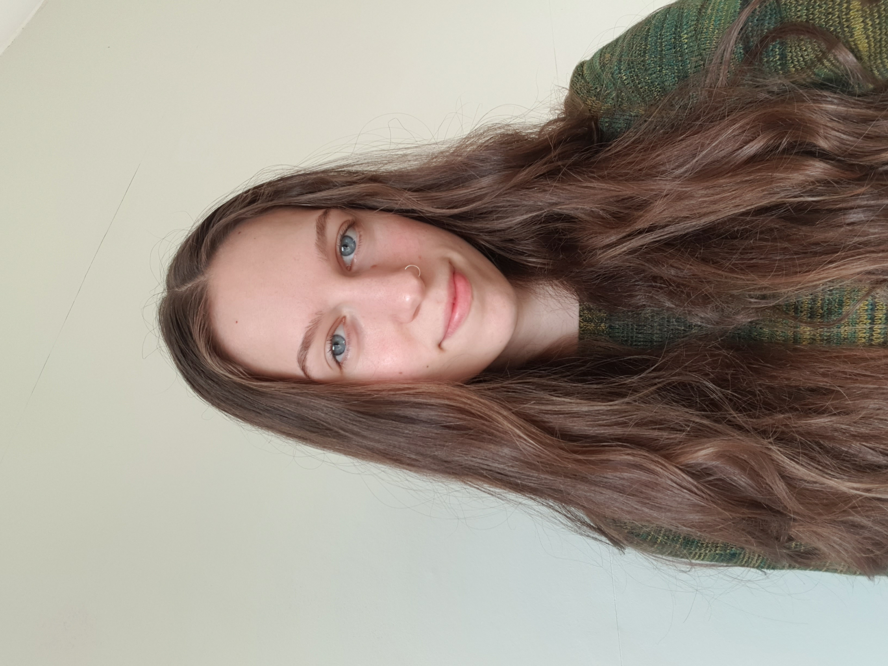

Abbie Robinson

Research Profile
I am a PhD student at the University of Leicester, focusing on the survival and detection of biosignatures. I am currently working on modelling the radiation environments of Mars, Ceres, Europa, and Enceladus using Geant4 in order to understand biosignature preservation potentials and requirements for successful sample acquisition.
I have also worked on optimising the use of epi-illuminated microscopy and epi-fluorescence microscopy for contextual imaging, allowing for a correlative spectroscopic approach for studying analogue material of key astrobiological targets. This work was completed in preparation for the ExoMars Rosalind Franklin rover.
My background is in chemistry, achieving a Masters in Chemistry from the University of York, with a focus on atmospherics and the environment. My master's research project focused on the application of U.V.-vis spectroscopy to study the photolysis parameters of atmospherically relevant carbonyl species, and the implications of these degradation pathways on air quality.
Teaching & Outreach
I am a qualified teacher (QTS + PGCE) in secondary science from the National Institute of Teaching with a passion for encouraging young people into STEM! I have experience working with a wide age-range of students, including a full-time teaching role and mentoring roles within the classroom as a secondary science teacher.
My pedagogical background includes teaching science at KS3 and KS4 levels, as well as Chemistry at A-Level (KS5), alongside specialised phonics support in KS1. I am particularly committed to supporting students from under-represented backgrounds in the physical sciences.
Research
Planetary Radiation Modeling
Characterising particle flux across Mars, Ceres, Europa, and Enceladus to support future exploration missions.
Automated Analogue Analysis
Developed a fully automated data acquisition workflow for context imaging and fluorescence microscopy of key analogues, applicable to remote rovers.
GITHUBPublications
Sensitivity Analysis of the Geant4 Monte Carlo Toolkit and Application to Astrobiology Radiation Studies
A. T. Robinson, et al.
>> STATUS: IN_PREPARATION
Contributions
Atmospheric oxidation of new “green” solvents – Part 2: methyl pivalate and pinacolone
Mapelli, C. et al. (2023) Atmospheric Chemistry and Physics
Practical Atmospheric Photochemical Kinetics for Undergraduate Teaching and Research
Metcalf et al. (2025) RSC Sustainability